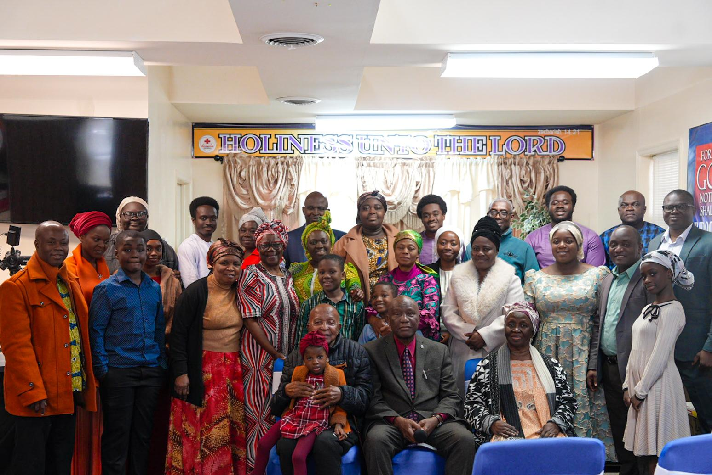
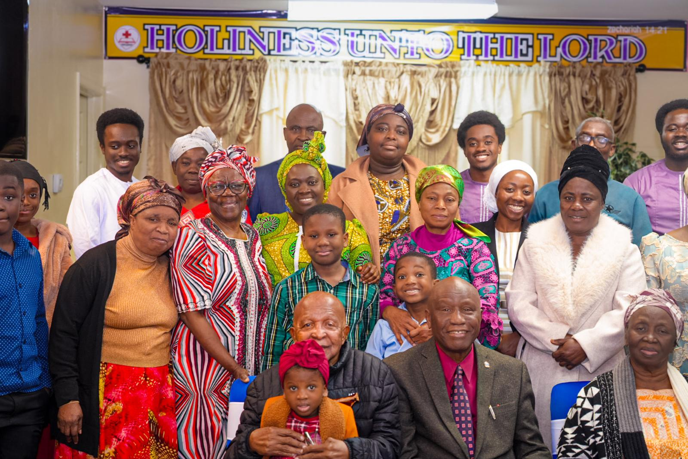
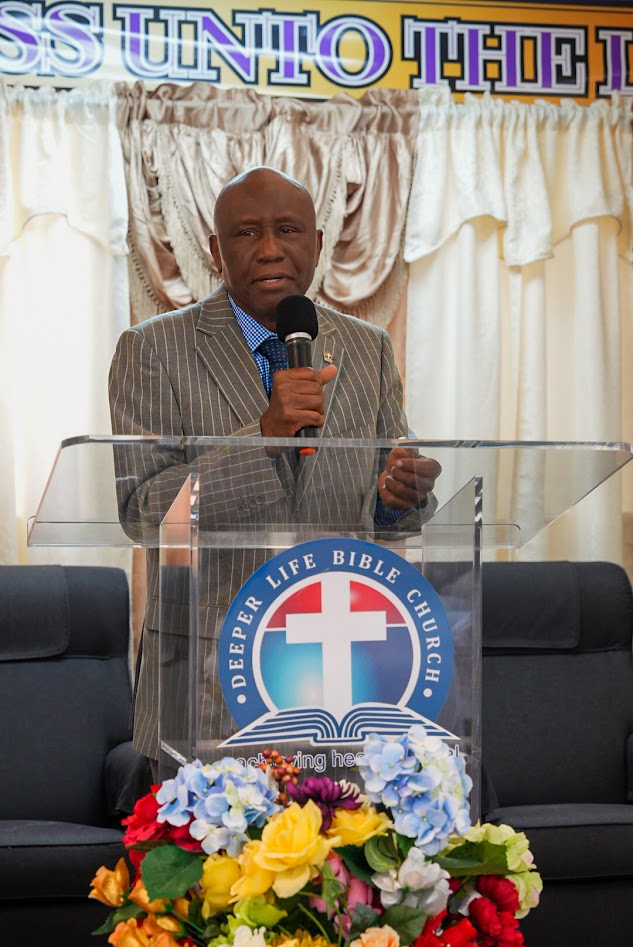

Welcome to Deeper Life Bible Church Alexandria, VA — a small, warm, multinational congregation devoted to the systematic teaching of God's word and the pursuit of holy living. Wherever you are in your walk, there's a seat for you here.



Greetings from Calvary!
On behalf of our entire church family here in Alexandria, Virginia, it is my joy to welcome you to Deeper Life Bible Church. Whether you found us through a friend, an online search, or simply felt led to stop by, we are grateful you are here.
Our congregation is a warm, multinational family united by a shared devotion to the systematic teaching of God's word and a pursuit of holy living. No matter where you are in your walk with Christ, there is a place for you among us — a seat, a hand to hold, and a family ready to grow with you.
I invite you to join us for a service, meet our members, and experience firsthand the love of Christ lived out in community. We look forward to welcoming you home.
Pastor Dr. James Amara
Location Pastor, Deeper Life Bible Church — Alexandria, VADeeper Life Bible Church is a global, Bible-based holiness church that started in 1973 at Lagos, Nigeria with 15 people, under the leadership of its founder and General Superintendent, Pastor Dr. William F. Kumuyi. Our commitment is to the systematic and expository teaching of God's word, and to nurturing believers into holy, purposeful living.
Our mission is to spread the message of salvation to all nations, fulfilling the Great Commission. We envision a community of believers established in the faith, living holy lives, and prepared for the coming of Christ.
Core truths from Scripture that shape everything we teach and practice.
8601 Engleside Office Park, Alexandria, VA 22309 — stop by any Sunday, or use the map below to plan your visit.